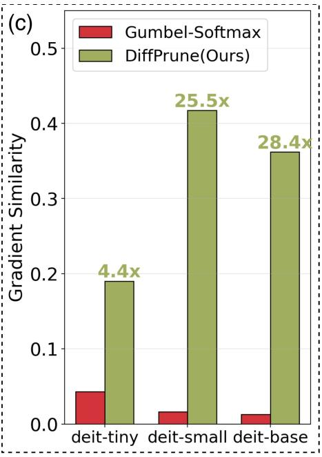
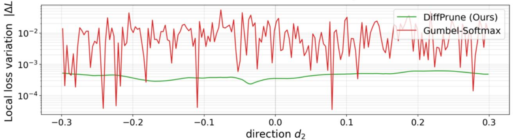

Visual SSL / representation · P1 · 2026-05-29
Beyond Surrogate Gradients：视觉基础模型规模继续上升后，哪些 visual tokens 真有表征价值会变成基础问题；这篇提供了可训练的 token 重要性学习接口
训练阶段直接在 token representation 上获得可微优化路径，推理阶段再用 hard threshold 删除 token。
编号2605.28051
优先级P1
类别Visual SSL / representation
会议arXiv
方法DiffPrune 将视觉 token pruning 从离散选择/Gumbel-Softmax 近似改为连续信息节流；Information Throttler 用方差保持噪声按重要性分数调制 token 信息量。
来源arXiv / OpenReview
先说结论。视觉基础模型规模继续上升后，哪些 visual tokens 真有表征价值会变成基础问题；这篇提供了可训练的 token 重要性学习接口。 训练阶段直接在 token representation 上获得可微优化路径，推理阶段再用 hard threshold 删除 token。


核心问题
视觉基础模型规模继续上升后，哪些 visual tokens 真有表征价值会变成基础问题；这篇提供了可训练的 token 重要性学习接口。
方法拆解
DiffPrune 将视觉 token pruning 从离散选择/Gumbel-Softmax 近似改为连续信息节流；Information Throttler 用方差保持噪声按重要性分数调制 token 信息量。
主要贡献
训练阶段直接在 token representation 上获得可微优化路径，推理阶段再用 hard threshold 删除 token。
实验看点
摘要称 10 个 VLM benchmark 上保留 96.5% full-model accuracy，同时 LLM prefill 加速 2.85x，额外推理开销 0.69 ms。
局限与读法
核心目标是推理效率；需要看对不同 VLM backbone、长视频、多图输入和细粒度 grounding 的鲁棒性。